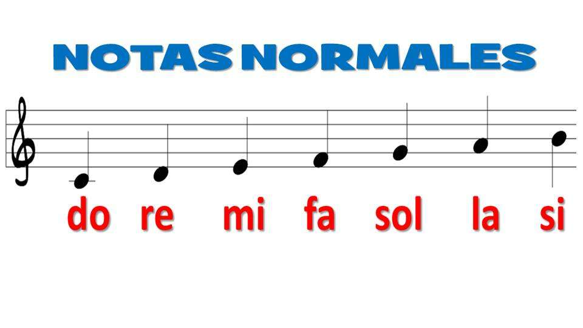
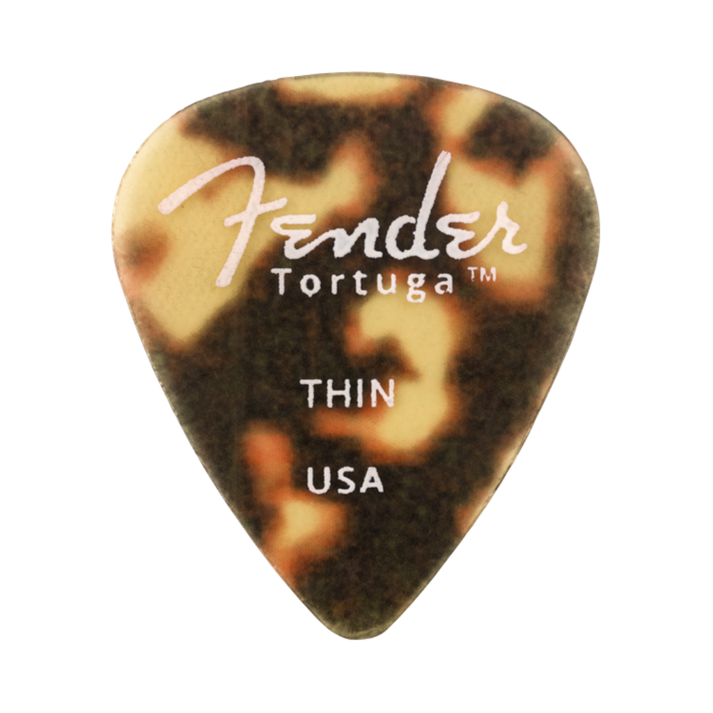
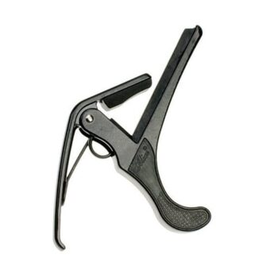
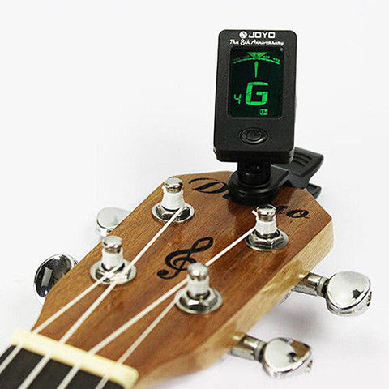
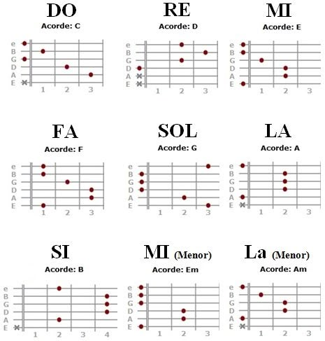

Las 7 Notas Musicales Naturales

En orden ascendente (de grave a agudo), las notas son:
- Do (C)
- Re (D)
- Mi (E)
- Fa (F)
- Sol (G)
- La (A)
- Si (B)


I. Herramientas Físicas
1. Accesorios básicos
Púas (plumas o picks):
- De diferentes grosores (delgadas para ritmos, gruesas para solos).
- Materiales: plástico, nylon, tortex, metal.
Cejilla (capo):
- Cambia la afinación sin re-afinar (útil para cambiar de tonalidad).
Correa (strap):
- Para tocar de pie (con seguros de fijación).

2. Mantenimiento y ajuste
Afinador (tuner):
- Digital, de pedal o en app

II. Herramientas Teóricas y Técnicas
1. Teoría musical aplicada
Escalas musicales:
Mayor, menor pentatónica, blues, modos griegos (dórico, mixolidio, etc.).
Acordes y progresiones:
Mayores, menores, séptimas, suspendidos, etc.
Progresiones comunes: I-IV-V, ii-V-I, etc.
2. Técnicas de ejecución
Técnicas expresivas:
Bendings, vibrato, hammer-ons, pull-offs, slides, palm mute.
3. Métodos de aprendizaje
Tablas de acordes y tablaturas (tabs):
Guías visuales para aprender canciones sin partitura.
Metrónomo:
Fundamental para desarrollar timing y ritmo.
¡Más info!
¡Conoce mas sobre este tema!